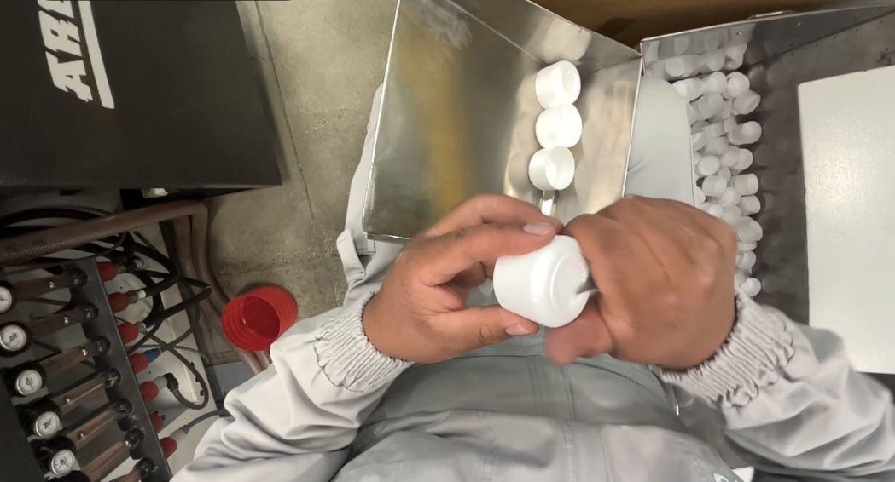

Centro de Investigación en Datos para Robótica e IA/Desde Latinoamérica
Latam entrenaa los robotsdel mañana.
Grabamos en primera persona el trabajo real de fábricas y laboratorios de Latinoamérica para entrenar la robótica y la IA del mañana.
Hablemos→
EnsamblajeControl de calidadEmbotelladoEnvasadoEtiquetadoEmpaquePaletizadoOperación de máquinaLogística
01Lo que vemos
Lo que ve la cámara.
Trabajo real, en ambientes reales. Cada cámara rota entre tareas.
CAM-0400:00:00
CAM-0500:00:00
CAM-0200:00:00
CAM-0700:00:00
02 — Conectemos
De la industria al futuro.
¿Construyes robots o modelos? ¿Operas una planta en Latinoamérica? Escríbenos.
BOLIVIAMANUFACTURAFARMAALIMENTOS Y BEBIDAS